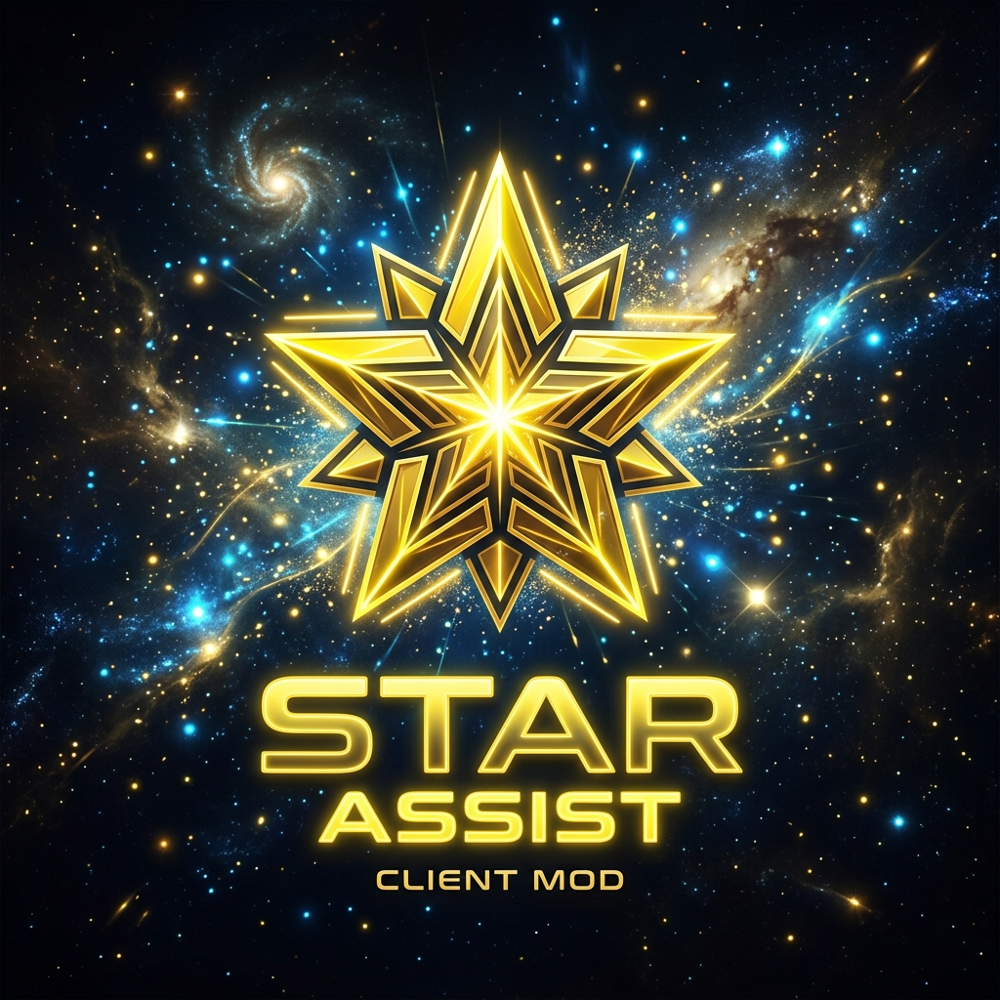

Мощный клиентский тренажёр и мод-помощник для одиночной игры и локальных сессий. Автоматическая наводка, умная атака с расчётом кулдауна и превосходный кастомизируемый визуал.
Всё необходимое для комфортных PvE тренировок в одном клиенте
При удержании колёсика мыши прицел плавно доводится до ближайшего противника в радиусе 12 блоков. Тонко настраиваемая плавность движения предотвращает резкие подёргивания.
Автоматически наносит удары с учётом шкалы кулдауна оружия. Интеграция с автоматическим прыжком (AutoJump) обеспечивает проведение только критических ударов для максимального урона.
Красивые вращающиеся кристаллы вокруг вашей текущей цели с поддержкой физики покачивания. Позволяет мгновенно ориентироваться в пылу сражения.
Удобная настройка цвета Hue (от 0 до 360°) и режим переливающейся радуги для всех визуалов: ChinaHat, TargetESP, Trails, Tracers, хитбоксов и траекторий.
Отображает полную информацию о цели: имя, точное здоровье с полоской окраски, надетую броню и предметы в руках для быстрого анализа соперника.
Подсвечивание сундуков (ChestESP) волной цветов по координатам, линии трассировщиков до игроков (Tracers) и точный расчёт траекторий полёта снарядов.
Попробуйте настроить цветовую палитру визуала прямо здесь! Перетащите слайдер оттенка (Hue) или включите режим переливающейся радуги (Rainbow), чтобы увидеть, как меняются эффекты мода.
Плавный автоматический перелив всех цветов в реальном времени
Три простых шага для запуска модификации
Скачайте и запустите официальный установщик Fabric для Minecraft версии 1.21.1 с сайта fabricmc.net.
Нажмите на кнопку ниже, чтобы скачать скомпилированную версию мода:
Перенесите скачанный файл в папку mods вашего игрового клиента. На Windows её можно открыть, нажав комбинацию Win + R и вставив следующий путь: